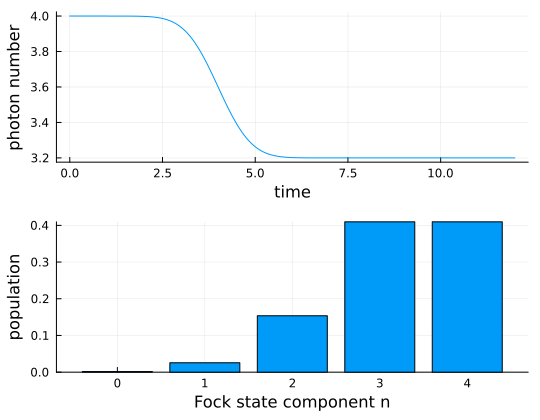

Beam Splitter Loss
This example models loss of pulse in a Fock-state by mixing the pulse with a vacuum port on a beam splitter. We analyze the output mode $v(t)$ which is the same as the input mode $u(t)$.
using QuantumInputOutput
using SecondQuantizedAlgebra
using QuantumOptics
using QuantumOpticsBase: dagger
using Plots
using LinearAlgebra# symbolic Hilbert space and operators (virtual input and output modes)
hu = FockSpace(:u)
hv = FockSpace(:v)
h = hu ⊗ hv
au = Destroy(h, :a_u, 1)
av = Destroy(h, :a_v, 2)
# symbolic parameters
@variables gu::Number gv::Number r::Real t::RealIn our example, we only have one input mode and one output mode, however, the beam splitter has two input and two output ports. Since the number of input and output ports needs to match to cascade a system we need to create a padding element and add concatenate it to the corresponding SLH elements. The padding element (1,0,0) represents vacuum input but also a non-tracked output, respectively.
# padding element for the unused port
G_p = SLH(1, 0, 0)
# beam splitter scattering matrix
S_bs = [r t; t -r]
# input cavity, beam splitter, and output cavity
G_u = SLH(1, gu' * au, 0)
G_in = G_u ⊞ G_p
G_bs = SLH(S_bs, [0, 0], 0)
G_v = SLH(1, gv' * av, 0)
# G_out = G_v ⊞ G_p # reflection is tracked
G_out = G_p ⊞ G_v # transmission is tracked
G = G_in ▷ G_bs ▷ G_outH = hamiltonian(G)\[ - 0.5 ~ \mathrm{conj}\left( \mathtt{gu} \right) ~ \mathtt{gv} ~ t ~ \mathit{i} a_{\mathrm{u}}a_{\mathrm{v}}^{\dagger} + 0.5 ~ \mathrm{conj}\left( \mathtt{gv} \right) ~ \mathtt{gu} ~ t ~ \mathit{i} a_{\mathrm{u}}^{\dagger}a_{\mathrm{v}}\]
L = lindblad(G)
L[1]\[\mathrm{conj}\left( \mathtt{gu} \right) ~ r a_{\mathrm{u}}\]
L[2]\[\mathrm{conj}\left( \mathtt{gu} \right) ~ t a_{\mathrm{u}} + \mathrm{conj}\left( \mathtt{gv} \right) a_{\mathrm{v}}\]
# Gaussian input mode
γ_ = 1.0
σ = 1 / γ_
T_end = 12σ
u(t) = 1/(sqrt(σ)*π^(1/4)) * exp(-(t - 4σ)^2 / (2*σ^2))
T = [0:0.004:1;] * T_end
ΔT = T[2] - T[1]
# time-dependent coupling for the virtual cavities
gu_t = coupling_input(u, T)
gv_t = coupling_output(u, T) # v(t) = u(t)
dict_p_t = Dict(gu => gu_t, gv => gv_t)
# beam splitter parameters
η = 0.2 # loss
r_ = sqrt(η) # reflection
t_ = sqrt(1 - η) # transmission
dict_p = Dict([t, r] .=> [t_, r_])As usual, we translate the symbolic system into numeric expressions and solve the dynamics with QuantumOptics.jl.
# numeric basis
n_ph = 4
bu = FockBasis(n_ph)
bv = FockBasis(n_ph)
b = bu ⊗ bv
au_qo = destroy(bu) ⊗ one(bv)
av_qo = one(bu) ⊗ destroy(bv)
# translate to numeric operators
H_QO = to_numeric(H, b; parameter = dict_p, time_parameter = dict_p_t)
L_QO = [to_numeric(Li, b; parameter = dict_p, time_parameter = dict_p_t) for Li in L]
function input_output(t, ρ)
Ht = H_QO(t)
J = [L_QO[1](t), L_QO[2](t)]
return Ht, J, dagger.(J)
end# time evolution
ψ0 = fockstate(bu, n_ph) ⊗ fockstate(bv, 0)
time, ρt = timeevolution.master_dynamic(T, ψ0, input_output)n_u_t = real(expect(au_qo'au_qo, ρt))
n_v_t = real(expect(av_qo'av_qo, ρt))
ρv_end = ptrace(ρt[end], 1)
pop_n_ls = [real(ρv_end.data[i, i]) for i = 1:(n_ph+1)]We plot the mean photon number and the distribution of the Fock state components after the beam splitter interaction. We can see that the mean photon number is reduced by $\eta = 20 \%$.
p1 = plot(
T,
n_u_t .+ n_v_t;
xlabel = "time",
ylabel = "photon number",
grid = true,
label = "",
)
p2 = bar(
0:n_ph,
pop_n_ls;
xlabel = "Fock state component n",
ylabel = "population",
label = "",
)
plot(p1, p2; layout = (2, 1), size = (540, 420))
Note that the calculation can also be performed in the interaction picture, which would be numerically beneficial and the loss of the input mode $u(t)$ can be directly observed.
Package versions
These results were obtained using the following versions:
using InteractiveUtils
versioninfo()
using Pkg
Pkg.status(
[
"QuantumInputOutput",
"SecondQuantizedAlgebra",
"QuantumOptics",
"Plots",
"LaTeXStrings",
],
mode = PKGMODE_MANIFEST,
)Julia Version 1.12.6
Commit 15346901f00 (2026-04-09 19:20 UTC)
Build Info:
Official https://julialang.org release
Platform Info:
OS: Linux (x86_64-linux-gnu)
CPU: 4 × AMD EPYC 9V74 80-Core Processor
WORD_SIZE: 64
LLVM: libLLVM-18.1.7 (ORCJIT, znver4)
GC: Built with stock GC
Threads: 4 default, 1 interactive, 4 GC (on 4 virtual cores)
Environment:
JULIA_PKG_SERVER_REGISTRY_PREFERENCE = eager
JULIA_DEBUG = Documenter
JULIA_NUM_THREADS = auto
Status `~/work/QuantumInputOutput.jl/QuantumInputOutput.jl/docs/Manifest.toml`
[b964fa9f] LaTeXStrings v1.4.0
[91a5bcdd] Plots v1.41.6
[18f9eda6] QuantumInputOutput v0.4.0 `~/work/QuantumInputOutput.jl/QuantumInputOutput.jl`
[6e0679c1] QuantumOptics v1.2.6
[f7aa4685] SecondQuantizedAlgebra v0.10.0This page was generated using Literate.jl.